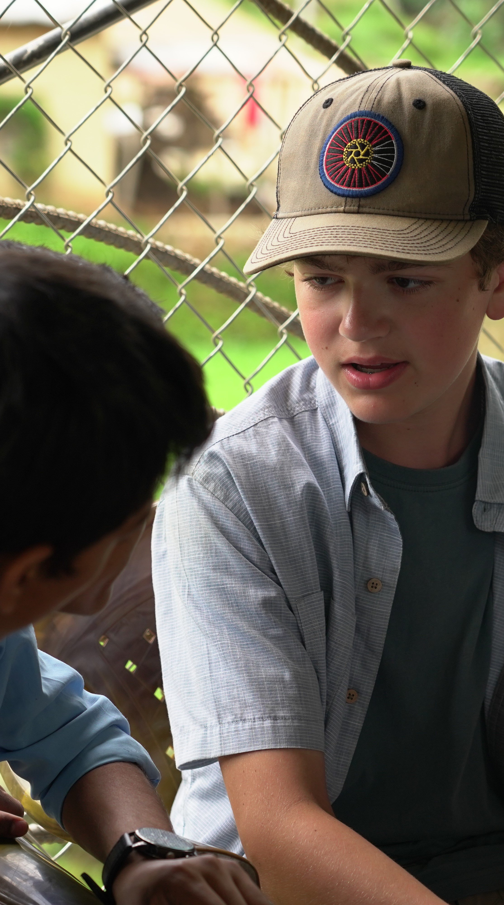
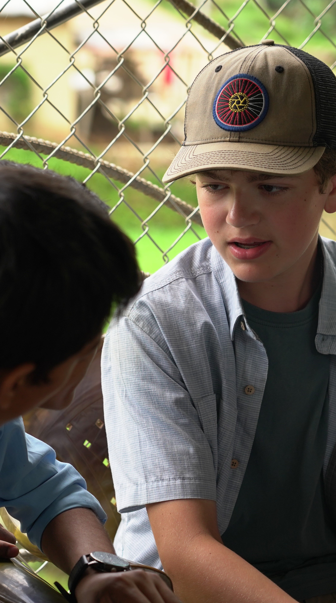

Hello there! I'm Anugrah, an enthusiastic traveler with a passion for capturing moments through my lens. Exploring new places and experiencing diverse cultures is not just a hobby for me; it's a way of life. My camera is my constant companion, transforming ordinary scenes into extraordinary memories.
Beyond my adventures, I'm on a journey to become a skilled web programmer. I find joy in the art of coding and creating digital experiences. Working with people is something I cherish, as it allows me to blend my technical skills with a collaborative spirit. The dynamic nature of web development keeps me engaged, and I'm always eager to take on new challenges and learn innovative technologies.
I'm outgoing, always ready for a new connection, and passionate about learning. Whether it's mastering a new programming language or discovering hidden gems in a foreign land, I thrive on the thrill of growth and exploration.
Join me on this exciting journey of travel, photography, and web development as I navigate through the ever-evolving landscape of life's adventures
 
